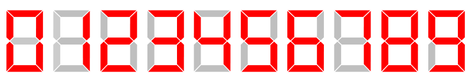
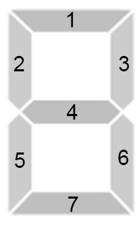

Codeforces Round #637
A.Nastya and Strange Generator
题意：有一个按照如下方法随机生成排列 \(p\) 的生成器：
- 定义 \(r_j\) 为 \(j\) 右侧（包括 \(j\) ）第一个没有被标记的位置， \(count_j\) 表示满足 \(r_i=j\) 的 \(i\) 的个数。
- 每一轮选择 \(count\) 值最大的位置 \(i\)，将 \(p_i \leftarrow\) 已经被标记的位置的数量 \(+1\)。有多个相同位置可任意选择。
现在给你一个排列，求这个排列有没有可能是上面的生成器生成的。
如果某一轮在一个位置填了数，那么接下来必须填满以它开头的后缀。
B.Nastya and Scoreboard
题意：有 \(n\) 个如下图所示的灯组原件，组成了一个计分板。


在这 \(n\) 个灯组原件中，有一些灯管保持常亮。求再点亮恰好 \(k\) 个灯管，可以组成的最大的数。
设 \(ok[p][k]\) 表示以 \(p\) 开头的后缀，再点亮恰好 \(k\) 个灯管能否组成一个合法的数。转移用位运算很容易实现。
求最大的数利用 dp 出来的 \(ok\) 数组，直接从高位贪心就行了。
C.Nastya and Unexpected Guest
题意：马路可以视作一个 \([0,n]\) 的数轴。马路上有 \(m\) 个安全岛，坐标为 \(d_1,d_2,\cdots,d_m,d_i\in \mathbb{N}\)。位置 \(0\) 和 \(n\) 都有安全岛。每一秒你可以从位置 \(x\) 移动到 \(x \pm 1\)，但不能移出马路。你只有到达安全岛才能改变你的移动方向。有一个红绿灯，绿灯时间为 \(g\) 秒，红灯时间为 \(r\) 秒。你在绿灯时间内必须连续不断地移动，在红灯时间内必须在某个安全岛停留。在时刻 \(0\) 你到达了位置 \(0\)，此时红灯刚刚变为绿灯，求你到达位置 \(n\) 的最短时间。
设 \(f[p][t]\) 表示你在时刻 \(tim\) 到达安全岛 \(p\) 的最短时间，其中在时刻 \(tim\)，一个周期开始了 \(t\) 秒。（时刻 \(0-(g-1)\) 是绿灯，\(g-(g+r-1)\) 是红灯）
这样点数是 \(mg \leq 10^7\)。直接跑最短路是不行的。
考虑过马路的过程，如果可以直接从位置 \(0\) 走到位置 \(n\) 那肯定直接走。否则在中间某个安全岛度过一轮红绿灯，又相当于从位置 \(d_x\) 走到位置 \(n\)。因此我们只用关心 \(f[p][0]\) 的值，剩下一段一定是直接走到位置 \(n\)。
我们令 \(f[p][t]\) 表示在时刻 \(t\) 到达安全岛 \(p\) 至少需要经过几轮红绿灯。
那么：
\(f[u][t]\rightarrow f[v][t'] \quad t' \neq g\)
\(f[u][t]+1\rightarrow f[v][0] \quad t'=g\)
（以上均默认转移合法）
这样就可以用 01-BFS 做到 \(mg\) 的复杂度。（边权 \(0\) 入队头，边权 \(1\) 入队尾，相当于把边权 \(0\) 的连通块缩点）。
D.Nastya and Time Machine
题意：给定一棵有 \(n\) 个点的树，通过每条边需要 \(1\) 秒。你的位置可以用 \((v,t)\) 表示，在时刻 \(t\) 你在顶点 \(v\)。你可以进行如下操作：
- 时间回溯，走到位置 \((v,t') \quad t'<t\)。
- 沿着树上的边 \((u,v)\) 走到位置 \((u,t+1)\)。
你不能经过同一个位置两次（顶点和时刻都相同）。在时刻 \(0\) 你在根节点，求一条经过所有点至少一次并回到根的路径 $(v_1,t_1),(v_2,t_2),$，使得 \(\max t_i\) 最小。
首先记 \(\max deg[u]=T\)，那么答案为 \(T\)。这是一个显然的下界，可以通过如下构造方案取到：
- 记 \(solve(u,tim,tag)\) 表示我们构造一条在时刻 \(tim\) 到达节点 \(u\) ，遍历它的整棵子树，在时刻 \(tag\) 回到点 \(u\) 的路径。
- 进入 \(u\) 时记录答案 \((u,tim)\)。遍历 \(u\) 的所有儿子 \(v\)，\(solve(v,tim+1,tim)\)，回溯到 \(u\) 时记录 \((u,tim + 1)\)，然后令 \((u,tim) \leftarrow (u,tim + 1)\)。如果进入 \(v\) 这棵子树之前点 \(u\) 就有 \(tim = T\)，那么进行时间回溯，记录答案，使得遍历完成之后的时刻恰好是 \(tag\)。利用已经遍历的儿子数量这是非常好计算的。
- 如果遍历完所有儿子之后 \(tim \neq tag\)，时间回溯，记录答案。
E.Nastya and Bees
错题？
F.Nastya and CBS
后补
Codeforces Round #637